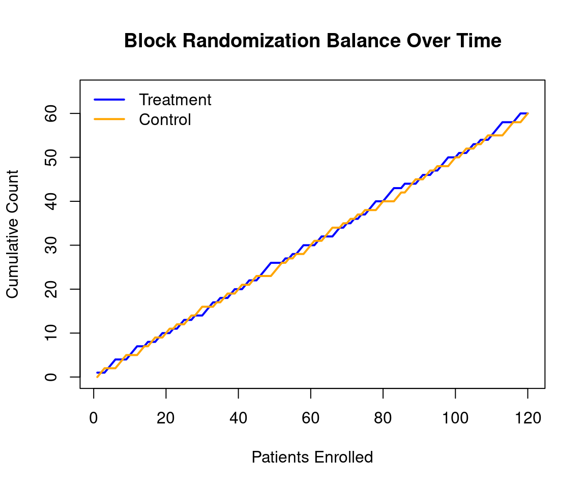
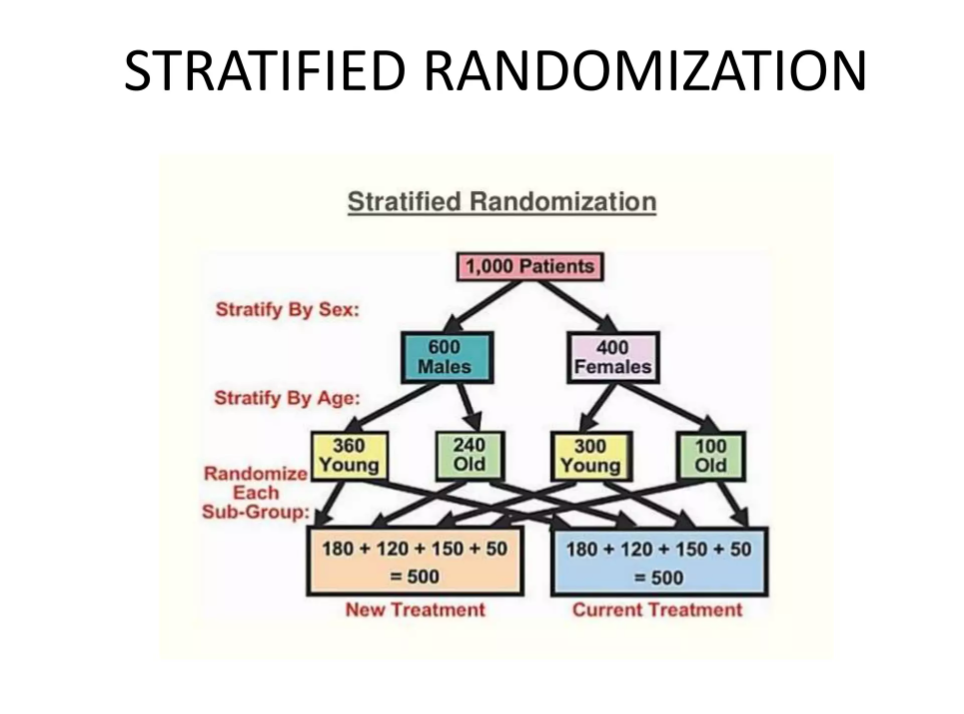
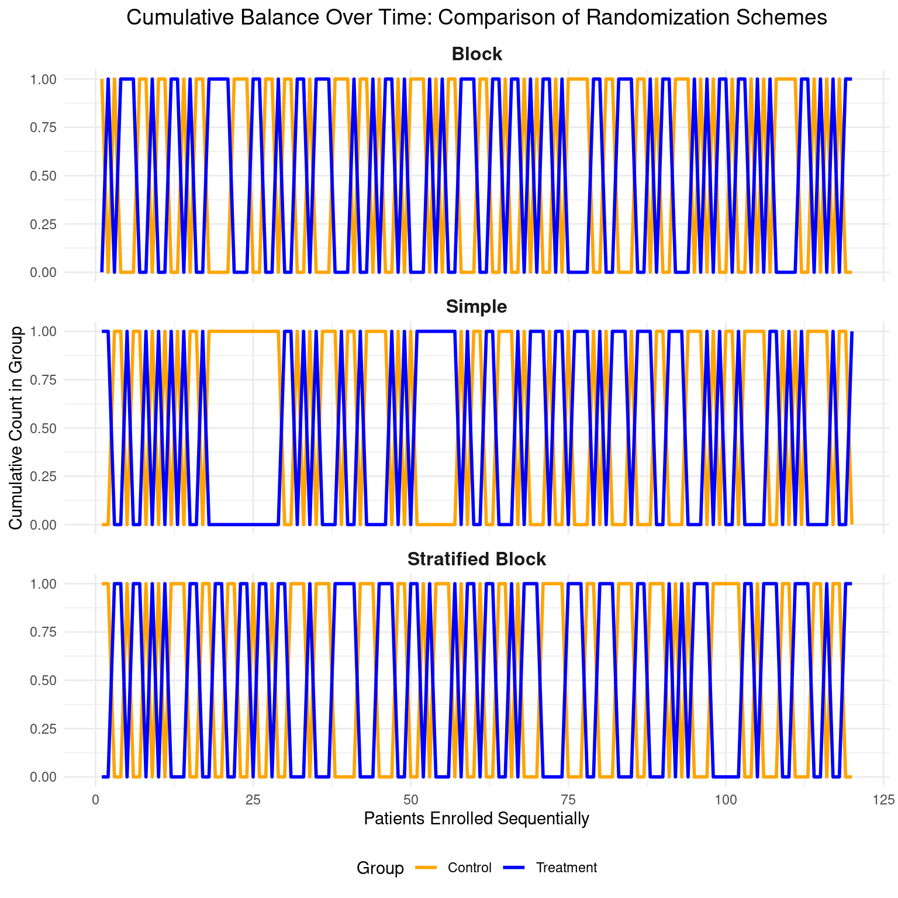

Code
packages <- c(
'blockrand',
'pwr',
'randomizeR',
'tidyverse'
)

Randomization is the process of assigning participants in a study to different treatment arms using a chance mechanism. This ensures that each participant has a known probability of receiving each treatment, which helps eliminate selection bias and balances both known and unknown confounders across groups. This tutorial focuses on three common randomization schemes used in RCTs: simple randomization, block randomization, and stratified randomization. You will learn how to implement each scheme in R with practical examples.
Randomization is the cornerstone of valid causal inference in RCTs. It ensures that—on average—treatment and control groups are comparable at baseline, balancing both known and unknown confounders.
However, not all randomization is equal. In small trials or multi-center studies, simple randomization can lead to imbalance in group sizes or key covariates. To address this, researchers use structured schemes:
| Scheme | Purpose | Best For |
|---|---|---|
| Simple | Pure chance assignment | Large trials (N > 200) |
| Block | Ensures balance over time | Small-to-medium trials |
| Stratified | Balances key prognostic factors | Multi-center or heterogeneous populations |
In this tutorial, you’ll learn how to implement all three in R using the randomizeR and blockrand packages, with reproducible examples.
packages <- c(
'blockrand',
'pwr',
'randomizeR',
'tidyverse'
)#| warning: false
#| error: false
# Install missing packages
new_packages <- packages[!(packages %in% installed.packages()[,"Package"])]
if(length(new_packages)) install.packages(new_packages)# Load packages with suppressed messages
invisible(lapply(packages, function(pkg) {
suppressPackageStartupMessages(library(pkg, character.only = TRUE))
}))# Check loaded packages
cat("Successfully loaded packages:\n")Successfully loaded packages: [1] "package:lubridate" "package:forcats" "package:stringr"
[4] "package:dplyr" "package:purrr" "package:readr"
[7] "package:tidyr" "package:tibble" "package:tidyverse"
[10] "package:randomizeR" "package:mvtnorm" "package:survival"
[13] "package:plotrix" "package:ggplot2" "package:pwr"
[16] "package:blockrand" "package:stats" "package:graphics"
[19] "package:grDevices" "package:utils" "package:datasets"
[22] "package:methods" "package:base" Here are the three main schemes we will cover:
Simple randomization (also called complete randomization) is the most basic and straightforward method of assigning participants in a randomized controlled trial (RCT) or other experimental study to different groups (e.g., treatment vs. control).
Each participant has an equal probability of being assigned to any group, and assignments are made independently — with no restrictions, blocks, or stratification based on participant characteristics.
It mimics classic random mechanisms: - Flipping a fair coin for each person (heads = treatment, tails = control). - Rolling a die (e.g., 1–3 = control, 4–6 = treatment). - Using a shuffled deck of cards. - Most commonly today: a computer-generated sequence of random numbers (e.g., via software like R, Python, or trial management systems).
The key feature is complete unpredictability — no one (researcher, participant, or staff) can guess the next assignment, which helps prevent selection bias and allocation bias.
Imagine enrolling 10 patients using simple randomization (coin flips):
Possible (but unlucky) outcome: 8 treatment, 2 control → severe imbalance.
In a large trial with 1,000 patients, such extremes become very unlikely, and groups tend to even out (around 500 each).
Simple randomization is the purest form of randomization and forms the foundation for understanding more sophisticated techniques — it’s ideal when the trial is large enough that chance alone provides good balance.
packages <- c(
'tidyverse',
'pwr',
'blockrand',
'randomizeR'
)#| warning: false
#| error: false
# Install missing packages
new_packages <- packages[!(packages %in% installed.packages()[,"Package"])]
if(length(new_packages)) install.packages(new_packages)# Load packages with suppressed messages
invisible(lapply(packages, function(pkg) {
suppressPackageStartupMessages(library(pkg, character.only = TRUE))
}))# Check loaded packages
cat("Successfully loaded packages:\n")Successfully loaded packages: [1] "package:lubridate" "package:forcats" "package:stringr"
[4] "package:dplyr" "package:purrr" "package:readr"
[7] "package:tidyr" "package:tibble" "package:tidyverse"
[10] "package:randomizeR" "package:mvtnorm" "package:survival"
[13] "package:plotrix" "package:ggplot2" "package:pwr"
[16] "package:blockrand" "package:stats" "package:graphics"
[19] "package:grDevices" "package:utils" "package:datasets"
[22] "package:methods" "package:base" We can implement simple randomization in R using the sample() function:
group
Control Treatment
53 47 head(data.frame(ID = 1:n, Group = group)) # Preview assignmentsWe can also simulate a dataset and apply simple randomization:
# Simulate a participant ID and baseline data
set.seed(456)
participants <- data.frame(
ID = 1:120,
Age = rnorm(120, mean = 55, sd = 10),
Sex = sample(c("M", "F"), 120, replace = TRUE)
)
# Simple randomization
participants$Group <- sample(c("Treatment", "Control"), nrow(participants), replace = TRUE)
# Check group sizes
table(participants$Group)
Control Treatment
62 58 # Optional: add a numeric column (1 = Treatment, 0 = Control)
participants$Treatment <- as.integer(participants$Group == "Treatment")The {randomizeR} package (available on CRAN) is an excellent specialized tool for implementing randomization in clinical trials, including simple randomization. It goes beyond base R by offering:
It’s particularly useful in the design phase of RCTs when you want more than just basic assignment — like formal documentation or bias checks.
set.seed(123)
# Define parameters for simple randomization (complete randomization)
# N = total sample size, groups = 2 (treatment vs control)
rar_par <- rarPar(N = 100, groups = c("Treatment", "Control"))
# Generate one randomization sequence (reproducible with seed)
set.seed(123) # For reproducibility during planning
rand_seq <- genSeq(rar_par, 1) # 1 = number of sequences to generate
# View the sequence (M = Treatment, U = Control by default; can be customized)
rand_seq
Object of class "rRarSeq"
design = RAR
seed = 969167
N = 100
groups = Treatment Control
The sequence M:
1 Treatment Treatment Treatment Treatment Control Treatment Control Treatment Control Control ... # Or get it as a factor/data frame
assignments <- getRandList(rand_seq)
head(assignments) # Shows participant assignments [,1] [,2] [,3] [,4] [,5] [,6]
[1,] "Treatment" "Treatment" "Treatment" "Treatment" "Control" "Treatment"
[,7] [,8] [,9] [,10] [,11] [,12] [,13]
[1,] "Control" "Treatment" "Control" "Control" "Control" "Treatment" "Control"
[,14] [,15] [,16] [,17] [,18] [,19]
[1,] "Control" "Treatment" "Treatment" "Control" "Control" "Treatment"
[,20] [,21] [,22] [,23] [,24] [,25]
[1,] "Treatment" "Control" "Treatment" "Treatment" "Control" "Control"
[,26] [,27] [,28] [,29] [,30] [,31]
[1,] "Control" "Treatment" "Control" "Treatment" "Treatment" "Treatment"
[,32] [,33] [,34] [,35] [,36] [,37]
[1,] "Treatment" "Control" "Treatment" "Treatment" "Control" "Treatment"
[,38] [,39] [,40] [,41] [,42] [,43] [,44]
[1,] "Control" "Control" "Control" "Control" "Treatment" "Control" "Control"
[,45] [,46] [,47] [,48] [,49] [,50]
[1,] "Treatment" "Treatment" "Control" "Control" "Treatment" "Control"
[,51] [,52] [,53] [,54] [,55] [,56]
[1,] "Control" "Treatment" "Treatment" "Control" "Treatment" "Treatment"
[,57] [,58] [,59] [,60] [,61] [,62]
[1,] "Control" "Treatment" "Treatment" "Control" "Treatment" "Treatment"
[,63] [,64] [,65] [,66] [,67] [,68]
[1,] "Control" "Treatment" "Control" "Control" "Treatment" "Control"
[,69] [,70] [,71] [,72] [,73] [,74]
[1,] "Treatment" "Treatment" "Treatment" "Treatment" "Control" "Treatment"
[,75] [,76] [,77] [,78] [,79] [,80] [,81]
[1,] "Control" "Control" "Control" "Treatment" "Control" "Control" "Treatment"
[,82] [,83] [,84] [,85] [,86] [,87]
[1,] "Treatment" "Treatment" "Treatment" "Control" "Control" "Treatment"
[,88] [,89] [,90] [,91] [,92] [,93] [,94]
[1,] "Control" "Control" "Control" "Control" "Control" "Control" "Treatment"
[,95] [,96] [,97] [,98] [,99] [,100]
[1,] "Control" "Control" "Control" "Treatment" "Treatment" "Treatment"Block randomization (also called permuted block randomization) is a restricted randomization method used in randomized controlled trials (RCTs) to ensure that treatment groups stay balanced in size throughout the enrollment process — especially useful in small-to-moderate sized trials where simple randomization can produce chance imbalances (e.g., one group ending up with far more participants).
Participants are enrolled in small groups called blocks of fixed size (e.g., 4, 6, or 8). Within each block:
Example: 2-arm trial (Treatment A vs. Control B), block size = 4
→ Each block must contain exactly 2 A and 2 B.
Possible permutations (randomly chosen):
As participants enroll sequentially, the next assignment comes from the current block’s random permutation. Once a block is full, a new block starts. This guarantees that after every block (or multiple blocks), the group sizes are equal (or very close), preventing severe imbalances even early in recruitment.
Here is clean, ready-to-use R code for block randomization (permuted block randomization) using the two best packages: blockrand (easiest for most trials) and randomizeR (more formal with bias assessment).
R package blockrand is straightforward for generating block randomization lists with variable block sizes.
# Install if needed
# install.packages("blockrand")
library(blockrand)
set.seed(2026) # For reproducibility during testing; remove for real trial
# 120 participants, 2 arms (Treatment vs Control), 1:1 by default
my_blocks <- blockrand(
n = 120,
num.levels = 2,
levels = c("Treatment", "Control"),
block.sizes = c(2, 4)
)
print("Object created successfully?")[1] "Object created successfully?"[1] TRUE[1] "id" "block.id" "block.size" "treatment" [1] 120[1] 120[1] "factor" id block.id block.size treatment
1 1 1 4 Treatment
2 2 1 4 Control
3 3 1 4 Control
4 4 1 4 Treatment
5 5 2 4 Treatment
6 6 2 4 Treatment
Control Treatment
60 60 [1] 120[1] 120[1] 120You can visualize block balance over time
# 6. Finally plot (only run after the above prints look good)
plot(1:length(assignments), cum_trt,
type = "l", col = "blue", lwd = 2,
xlab = "Patients Enrolled", ylab = "Cumulative Count",
main = "Block Randomization Balance Over Time",
ylim = c(0, max(cum_trt, cum_ctrl) + 5))
lines(1:length(assignments), cum_ctrl, col = "orange", lwd = 2)
legend("topleft",
legend = c("Treatment", "Control"),
col = c("blue", "orange"),
lwd = 2, bty = "n")
You can creates a pdf file of randomization cards using plotblockrand() function based on the output from blockrand. This file can then be printed and the cards put into envelopes for use by a study coordinator for assigning subjects to treatment.
# Save the randomization list
# write.csv(my_blocks[, c("id", "treatment")],
# "block_randomization_list.csv", row.names = FALSE)
plotblockrand(my_blocks, file = "randomization_cards_test.pdf",
top = list(text = c("My Trial", "Patient: %ID%", "Arm: %TREAT%"),
col = c("black", "black", "red")),
middle = "",
bottom = "")
cat("PDF generated successfully\n")PDF generated successfully# Example: 2:1 ratio (more Treatment assignments)
my_blocks_2to1 <- blockrand(
n = 120,
num.levels = 3, # Total "slots" per full block cycle
levels = c("Treatment", "Treatment", "Control"), # 2 Treatment : 1 Control
block.sizes = c(3, 6), # Block sizes must be multiples of num.levels (3)
stratum = "All"
)
table(my_blocks_2to1$arm) # Expect ~80 Treatment, ~40 Control< table of extent 0 >We can also use the randomizeR package for more formal block randomization with bias assessment:
# Define parameters for permuted block randomization
# bc = vector of block lengths (can repeat values for many blocks)
# Here: use blocks of size 2, 4, 6 repeatedly to cover ~120 patients
bc_vector <- rep(c(2, 4, 6), times = 15) # Enough to cover >120; function uses as needed
pbr_params <- pbrPar(
bc = bc_vector, # block lengths
K = 2, # number of groups
ratio = c(1, 1), # 1:1 allocation
groups = c("Trt", "Ctrl") # group labels
)
# Now generate the sequence for N = 120
set.seed(2026) # for reproducibility; remove for real trial
rand_sequence <- genSeq(pbr_params)
# View assignments
assignments <- getRandList(rand_sequence)
head(assignments) [,1] [,2] [,3] [,4] [,5] [,6] [,7] [,8] [,9] [,10] [,11]
[1,] "Ctrl" "Trt" "Ctrl" "Trt" "Ctrl" "Trt" "Trt" "Ctrl" "Trt" "Ctrl" "Trt"
[,12] [,13] [,14] [,15] [,16] [,17] [,18] [,19] [,20] [,21] [,22]
[1,] "Ctrl" "Trt" "Ctrl" "Trt" "Ctrl" "Trt" "Ctrl" "Ctrl" "Trt" "Trt" "Trt"
[,23] [,24] [,25] [,26] [,27] [,28] [,29] [,30] [,31] [,32] [,33]
[1,] "Ctrl" "Ctrl" "Trt" "Ctrl" "Ctrl" "Trt" "Ctrl" "Trt" "Ctrl" "Ctrl" "Ctrl"
[,34] [,35] [,36] [,37] [,38] [,39] [,40] [,41] [,42] [,43] [,44]
[1,] "Trt" "Trt" "Trt" "Ctrl" "Trt" "Trt" "Ctrl" "Trt" "Ctrl" "Ctrl" "Trt"
[,45] [,46] [,47] [,48] [,49] [,50] [,51] [,52] [,53] [,54] [,55]
[1,] "Trt" "Ctrl" "Trt" "Ctrl" "Ctrl" "Trt" "Ctrl" "Trt" "Ctrl" "Trt" "Trt"
[,56] [,57] [,58] [,59] [,60] [,61] [,62] [,63] [,64] [,65] [,66]
[1,] "Trt" "Ctrl" "Ctrl" "Trt" "Ctrl" "Trt" "Ctrl" "Trt" "Trt" "Ctrl" "Ctrl"
[,67] [,68] [,69] [,70] [,71] [,72] [,73] [,74] [,75] [,76] [,77]
[1,] "Ctrl" "Trt" "Ctrl" "Ctrl" "Trt" "Trt" "Ctrl" "Trt" "Trt" "Trt" "Ctrl"
[,78] [,79] [,80] [,81] [,82] [,83] [,84] [,85] [,86] [,87] [,88]
[1,] "Ctrl" "Ctrl" "Trt" "Trt" "Ctrl" "Trt" "Ctrl" "Trt" "Ctrl" "Ctrl" "Ctrl"
[,89] [,90] [,91] [,92] [,93] [,94] [,95] [,96] [,97] [,98] [,99]
[1,] "Trt" "Trt" "Trt" "Ctrl" "Ctrl" "Trt" "Trt" "Ctrl" "Ctrl" "Trt" "Ctrl"
[,100] [,101] [,102] [,103] [,104] [,105] [,106] [,107] [,108] [,109]
[1,] "Trt" "Trt" "Ctrl" "Trt" "Ctrl" "Trt" "Ctrl" "Trt" "Ctrl" "Ctrl"
[,110] [,111] [,112] [,113] [,114] [,115] [,116] [,117] [,118] [,119]
[1,] "Trt" "Ctrl" "Trt" "Ctrl" "Trt" "Ctrl" "Trt" "Trt" "Ctrl" "Ctrl"
[,120] [,121] [,122] [,123] [,124] [,125] [,126] [,127] [,128] [,129]
[1,] "Trt" "Ctrl" "Trt" "Trt" "Ctrl" "Trt" "Ctrl" "Ctrl" "Trt" "Trt"
[,130] [,131] [,132] [,133] [,134] [,135] [,136] [,137] [,138] [,139]
[1,] "Trt" "Ctrl" "Ctrl" "Ctrl" "Trt" "Trt" "Trt" "Ctrl" "Ctrl" "Trt"
[,140] [,141] [,142] [,143] [,144] [,145] [,146] [,147] [,148] [,149]
[1,] "Ctrl" "Trt" "Trt" "Ctrl" "Ctrl" "Trt" "Ctrl" "Trt" "Ctrl" "Ctrl"
[,150] [,151] [,152] [,153] [,154] [,155] [,156] [,157] [,158] [,159]
[1,] "Trt" "Ctrl" "Trt" "Trt" "Ctrl" "Ctrl" "Trt" "Trt" "Ctrl" "Ctrl"
[,160] [,161] [,162] [,163] [,164] [,165] [,166] [,167] [,168] [,169]
[1,] "Trt" "Ctrl" "Trt" "Ctrl" "Trt" "Ctrl" "Trt" "Ctrl" "Trt" "Trt"
[,170] [,171] [,172] [,173] [,174] [,175] [,176] [,177] [,178] [,179]
[1,] "Ctrl" "Trt" "Ctrl" "Trt" "Ctrl" "Trt" "Trt" "Trt" "Ctrl" "Ctrl"
[,180]
[1,] "Ctrl"# Summary counts
table(assignments)assignments
Ctrl Trt
90 90 # Optional: Assess susceptibility to selection bias
assess(rand_sequence, issue = corGuess("CS")) # Correct guess probability
Assessment of a randomization procedure
design = PBR(2,4,6,2,4,6,2,4,6,2,4,6,2,4,6,2,4,6,2,4,6,2,4,6,2,4,6,2,4,6,2,4,6,2,4,6,2,4,6,2,4,6,2,4,6)
N = 180
K = 2
groups = Trt Ctrl
Sequence Relative_Frequency propCG(CS)
1 CtrlTrtCt ... 1 0.714# Export
write.csv(data.frame(ID = 1:120, Group = assignments),
"pbr_randomization.csv", row.names = FALSE)Stratified block randomization (also called stratified permuted block randomization) combines stratification and block randomization to achieve better balance in RCTs.
It first divides participants into strata (subgroups) based on important prognostic factors (e.g., sex, age category, disease severity, or study center) that strongly influence the outcome or response to treatment. Then, within each stratum, block (permuted block) randomization is applied separately to ensure balanced group sizes (treatment vs. control) within that subgroup.
This prevents imbalances in key baseline characteristics across treatment arms, which improves precision, reduces confounding, and increases statistical power—especially in smaller trials or when strata matter a lot.
Suppose a trial randomizes 1000 patients to a new treatment vs. standard care (1:1 ratio), stratifying by two factors: - Sex: Male or Female - Age: Young (<50) or Old (≥50)
This creates 4 strata:
Within each stratum, use permuted blocks (e.g., block size 4: exactly 2 treatment + 2 control per block, in random order like ABAB, BAAB, AABB, etc.).
Overall balance is achieved because:
From a standard epidemiology textbook example (Gordis, 2014), a simplified large-trial illustration shows:

In this diagram:
Start with total patients.
Stratify by sex → males/females.
Then by age within sex → young/old subgroups.
Randomize each subgroup separately → end up with ~500 in each arm, balanced across all strata.
Trial: 120 patients, 2 arms (Drug vs. Placebo), stratify by: - Prior biologic failure: Yes/No - Albumin level: Low (<3.0) or Normal (≥3.0)
→ 4 strata.
Use block size 4 or variable (4/6/8) in each stratum separately. After 20 patients in one stratum, groups will be close to equal (e.g., 10 Drug, 10 Placebo) due to blocks, and prognostic factors remain balanced overall.
Using {blockrand} (simple, produces randomization cards/PDF, great for trials)
# Install if needed
# install.packages("blockrand")
library(blockrand)
# Example: Stratify by 2 factors → 4 strata
# - Sex: Male / Female
# - Site/Center: Site1 / Site2
# 2 arms (Treatment vs Control), 1:1 ratio
# Target ~50 per stratum (adjust as needed)
# Variable block sizes: 2 and 4 (to reduce predictability)
set.seed(2026) # For reproducibility during planning; remove for real trial
# Stratum 1: Male + Site1
male_site1 <- blockrand(
n = 60, # Slightly more to allow dropouts/extra
num.levels = 2,
levels = c("Treatment", "Control"),
block.sizes = c(2, 4), # Randomly use blocks of 2 or 4
stratum = "Male_Site1"
)
# Stratum 2: Male + Site2
male_site2 <- blockrand(
n = 60,
num.levels = 2,
levels = c("Treatment", "Control"),
block.sizes = c(2, 4),
stratum = "Male_Site2"
)
# Stratum 3: Female + Site1
female_site1 <- blockrand(
n = 60,
num.levels = 2,
levels = c("Treatment", "Control"),
block.sizes = c(2, 4),
stratum = "Female_Site1"
)
# Stratum 4: Female + Site2
female_site2 <- blockrand(
n = 60,
num.levels = 2,
levels = c("Treatment", "Control"),
block.sizes = c(2, 4),
stratum = "Female_Site2"
)
# Combine into one master list (add ID prefix per stratum if desired)
all_assignments <- rbind(
male_site1, male_site2, female_site1, female_site2
)
# After generating all strata...
table(male_site1$treatment) # Now shows counts
Control Treatment
30 30 table(female_site2$treatment)
Control Treatment
30 30 # Full combined summary
table(all_assignments$treatment)
Control Treatment
120 120
Control Treatment
120 120 We can use randomizeR for stratified block randomization as well:
# Install if needed (run once)
# install.packages("randomizeR")
library(randomizeR)
# Set seed for reproducibility during planning/testing
# Remove set.seed() line when generating the actual trial list
set.seed(2026)
# Define parameters for random permuted block randomization
params <- rpbrPar(
N = 120, # Total sample size (required here!)
K = 2, # Number of groups/arms
rb = c(2, 4, 6), # Possible block sizes (randomly chosen each time)
ratio = c(1, 1), # 1:1 allocation
groups = c("Trt", "Ctrl") # Group labels
)
# Generate the randomization sequence
rand_sequence <- genSeq(params)
# Extract assignments as a vector
assignments <- getRandList(rand_sequence)
# Quick checks
head(assignments) # First few assignments [,1] [,2] [,3] [,4] [,5] [,6] [,7] [,8] [,9] [,10] [,11]
[1,] "Ctrl" "Trt" "Trt" "Ctrl" "Trt" "Ctrl" "Ctrl" "Ctrl" "Trt" "Trt" "Ctrl"
[,12] [,13] [,14] [,15] [,16] [,17] [,18] [,19] [,20] [,21] [,22]
[1,] "Trt" "Ctrl" "Trt" "Trt" "Ctrl" "Trt" "Trt" "Ctrl" "Ctrl" "Trt" "Ctrl"
[,23] [,24] [,25] [,26] [,27] [,28] [,29] [,30] [,31] [,32] [,33]
[1,] "Trt" "Ctrl" "Trt" "Ctrl" "Ctrl" "Ctrl" "Trt" "Trt" "Trt" "Ctrl" "Trt"
[,34] [,35] [,36] [,37] [,38] [,39] [,40] [,41] [,42] [,43] [,44]
[1,] "Ctrl" "Trt" "Ctrl" "Trt" "Trt" "Ctrl" "Ctrl" "Trt" "Ctrl" "Ctrl" "Ctrl"
[,45] [,46] [,47] [,48] [,49] [,50] [,51] [,52] [,53] [,54] [,55]
[1,] "Trt" "Trt" "Trt" "Ctrl" "Trt" "Ctrl" "Trt" "Ctrl" "Trt" "Ctrl" "Ctrl"
[,56] [,57] [,58] [,59] [,60] [,61] [,62] [,63] [,64] [,65] [,66]
[1,] "Ctrl" "Trt" "Trt" "Trt" "Ctrl" "Trt" "Ctrl" "Ctrl" "Trt" "Trt" "Trt"
[,67] [,68] [,69] [,70] [,71] [,72] [,73] [,74] [,75] [,76] [,77]
[1,] "Ctrl" "Ctrl" "Ctrl" "Trt" "Trt" "Trt" "Ctrl" "Ctrl" "Trt" "Ctrl" "Trt"
[,78] [,79] [,80] [,81] [,82] [,83] [,84] [,85] [,86] [,87] [,88]
[1,] "Trt" "Trt" "Ctrl" "Ctrl" "Ctrl" "Trt" "Ctrl" "Trt" "Ctrl" "Ctrl" "Trt"
[,89] [,90] [,91] [,92] [,93] [,94] [,95] [,96] [,97] [,98] [,99]
[1,] "Ctrl" "Trt" "Trt" "Ctrl" "Trt" "Ctrl" "Trt" "Trt" "Ctrl" "Ctrl" "Trt"
[,100] [,101] [,102] [,103] [,104] [,105] [,106] [,107] [,108] [,109]
[1,] "Ctrl" "Trt" "Ctrl" "Trt" "Ctrl" "Ctrl" "Trt" "Ctrl" "Ctrl" "Trt"
[,110] [,111] [,112] [,113] [,114] [,115] [,116] [,117] [,118] [,119]
[1,] "Trt" "Trt" "Ctrl" "Ctrl" "Trt" "Ctrl" "Ctrl" "Trt" "Trt" "Trt"
[,120]
[1,] "Trt" length(assignments) # Should be 120[1] 120table(assignments) # Should be very close to 60/60assignments
Ctrl Trt
59 61 # Export to CSV (ready for trial use)
write.csv(
data.frame(ID = 1:120, Group = assignments),
"random_permuted_block_randomization.csv",
row.names = FALSE
)
# Optional: Check susceptibility to selection bias (correct guess probability)
assess(rand_sequence, issue = corGuess("CS"))
Assessment of a randomization procedure
design = RPBR(2,4,6)
N = 120
K = 2
groups = Trt Ctrl
Sequence Relative_Frequency propCG(CS)
1 CtrlTrtTr ... 1 0.688set.seed(2026) # For reproducibility; remove for real trial
N_total <- 120 # Total participants
# -----------------------------
# 1. Simple Randomization
# -----------------------------
simple_assign <- sample(c("Treatment", "Control"), size = N_total, replace = TRUE, prob = c(0.5, 0.5))
simple_df <- data.frame(
ID = 1:N_total,
Method = "Simple",
Arm = simple_assign,
Enrolled = 1:N_total
)
simple_cum <- simple_df %>%
group_by(Enrolled) %>%
mutate(Cum_Treatment = cumsum(Arm == "Treatment"),
Cum_Control = cumsum(Arm == "Control"))
# -----------------------------
# 2. Block Randomization (Variable blocks for low predictability)
# -----------------------------
block_assign <- blockrand(
n = N_total,
num.levels = 2,
levels = c("Treatment", "Control"),
block.sizes = c(2, 4, 6) # Variable sizes
)
block_df <- data.frame(
ID = block_assign$id,
Method = "Block",
Arm = block_assign$treatment,
Enrolled = 1:N_total
)
block_cum <- block_df %>%
group_by(Enrolled) %>%
mutate(Cum_Treatment = cumsum(Arm == "Treatment"),
Cum_Control = cumsum(Arm == "Control"))
# -----------------------------
# 3. Stratified Block Randomization (2 strata example: Sex Male/Female)
# -----------------------------
# Stratum 1: Male (n=60)
male <- blockrand(n = 60, num.levels = 2, levels = c("Treatment", "Control"),
block.sizes = c(2, 4, 6), stratum = "Male")
# Stratum 2: Female (n=60)
female <- blockrand(n = 60, num.levels = 2, levels = c("Treatment", "Control"),
block.sizes = c(2, 4, 6), stratum = "Female")
strat_df <- rbind(
transform(male, ID = paste0("M_", id), Stratum = "Male"),
transform(female, ID = paste0("F_", id), Stratum = "Female")
) %>%
mutate(Enrolled = row_number(),
Method = "Stratified Block",
Arm = treatment) # Column is 'treatment'
strat_cum <- strat_df %>%
group_by(Enrolled) %>%
mutate(Cum_Treatment = cumsum(Arm == "Treatment"),
Cum_Control = cumsum(Arm == "Control"))
# -----------------------------
# Combine all for plotting
# -----------------------------
all_cum <- bind_rows(
select(simple_cum, Enrolled, Method, Cum_Treatment, Cum_Control),
select(block_cum, Enrolled, Method, Cum_Treatment, Cum_Control),
select(strat_cum, Enrolled, Method, Cum_Treatment, Cum_Control)
)
# Pivot longer for ggplot
all_long <- all_cum %>%
tidyr::pivot_longer(cols = c(Cum_Treatment, Cum_Control),
names_to = "Group", values_to = "Cumulative") %>%
mutate(Group = gsub("Cum_", "", Group))
# -----------------------------
# Multi-panel visualization of balance over time
# -----------------------------
ggplot(all_long, aes(x = Enrolled, y = Cumulative, color = Group)) +
geom_line(linewidth = 1) +
facet_wrap(~ Method, ncol = 1, scales = "free_y") + # One panel per method
scale_color_manual(values = c("Treatment" = "blue", "Control" = "orange")) +
labs(title = "Cumulative Balance Over Time: Comparison of Randomization Schemes",
x = "Patients Enrolled Sequentially",
y = "Cumulative Count in Group",
color = "Group") +
theme_minimal() +
theme(legend.position = "bottom",
strip.text = element_text(size = 12, face = "bold"),
plot.title = element_text(hjust = 0.5, size = 14))
# Optional: Save plot
ggsave("randomization_balance_comparison.png", width = 8, height = 10, dpi = 300)Above Plot Shows (Expected Behavior):
Simple: Lines may diverge noticeably early (e.g., one arm leads by 10+), then even out by chance in larger N.Block: Lines stay very close (deviations ≤ half block size), with small “resets” at block ends — tight parallel climb.Stratified Block: Similar to block but even tighter within strata; overall balance excellent if strata are balanced.| Situation | Recommended Scheme |
|---|---|
| Large trial (N > 200) | Simple |
| Small trial (N < 100) | Block (size 4 or 6) |
| Multi-center trial | Stratified + Block (by site) |
| Known strong prognostic factor (e.g., disease stage) | Stratified by that factor |
| Adaptive trial with interim looks | Block (to avoid bias at stopping) |
Block sizes should be:
randomizeR::generateRandomization() with custom objectives.This tutorial covered three key randomization schemes for RCTs—simple, block, and stratified randomization—and how to implement each in R using the randomizeR and blockrand packages. Here is a quick comparison:
| Scheme | Pros | Cons | R Function |
|---|---|---|---|
| Simple | Easy, transparent | Risk of imbalance |
sample() or randomizeR::simple
|
| Block | Guaranteed balance | Predictable sequence (risk of selection bias if not concealed) | randomizeR::block |
| Stratified | Balances key subgroups | Requires larger N per stratum | Combine group_by() + block randomization |
By choosing the right randomization scheme—and implementing it correctly in R—you ensure your RCT has the strongest possible foundation for causal inference.
randomizeR: Comprehensive randomization methodsblockrand: Simple block randomization